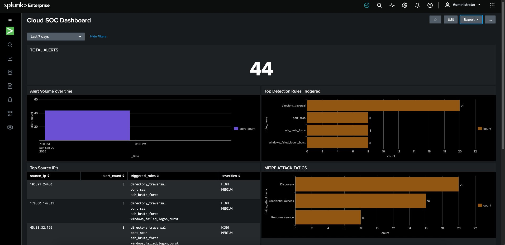
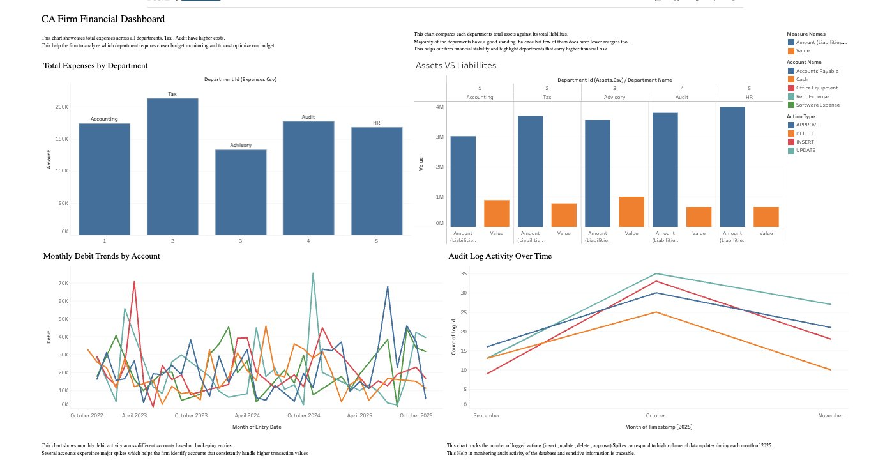

Cybersecurity • Cloud • Infrastructure
Hi, I'm Krish Puwar.
I build the systems that detect, contain, and secure infrastructure — managing risk before it becomes an incident.
I'm working to break into the industry — actively seeking Summer 2027 internships and full-time roles for 2028 in cybersecurity, cloud, and infrastructure.
OPEN TO OPPORTUNITIES
SECURITY+ IN PROGRESS
CCNA IN PROGRESS
01. About
The Professional Behind the Work
A quick look at background, focus areas, and what drives the work.
During my undergrad, I interned as a Security Engineer at Zayed University and as an Undergraduate Research Intern on integrated systems for a SPIR-funded project (Strategic Partnership for Industrial Resurgence, a SUNY grant program) under UB's Wireless Networks lab — experiences that pushed me toward security work grounded in real infrastructure rather than just theory.
[ EDUCATION ]
- Master of Science in Computer Science, Computer Security & Privacy specialization — University at Buffalo, expected December 2027
- Bachelor of Science in Computer Engineering, University at Buffalo — Cum Laude, May 2026
[ INTERESTS ]
Outside of tech and studying, I'm into:
- 🏎️ Formula 1
- 🎾 Tennis
- 🏏 Cricket
- 💪 Gym
02. Experience
Professional Milestones
A timeline of roles, responsibilities, and what came out of them.
August 2026 — Present
Research Assistant
@ Dr. Hongxin Hu's Lab, University at BuffaloBuilding AI security labs, working at the intersection of AI systems and security research.
February 2026 — May 2026
Undergraduate Research Engineer
@ Integrated Systems · WN4SS Lab, University at BuffaloContributed to GPROP, a platform that turns raw LiDAR terrain data into RF signal coverage maps for wireless network planning — built in C through an SRIP-funded research program, publication in progress. Owned the containerized infrastructure and Bash automation behind the build pipeline.
July 2025 — August 2025
Security Engineering Intern
@ Zayed University, Abu Dhabi, UAEWorked in a live Security Operations Center, building a full-stack SOC training platform and running adversary emulation with MITRE Caldera alongside Wazuh monitoring for detection-and-response exercises.
April 2025 — February 2026
Director
@ UB HackingRose from Food Lead to Director of UB's largest student-run hackathon. Led a team of 20 across engineering, sponsorship, logistics, and marketing, and served as primary contact for sponsors, judges, and university administration.
October 2023 — May 2026
Academic Tutor
@ University at BuffaloTutored introductory computer science courses and Calculus I & II, breaking down complex concepts and adapting to each student's learning style. Helped organize and lead group study sessions.
August 2023 — May 2024
Senator
@ Residence Hall Association, University at BuffaloLed Senate meetings representing on-campus residents, working with fellow senators and administration on initiatives to improve the residential experience.
Oct 2021
Student Intern
@ IBMDesigned Healthease, a health analytics platform for hospitals — selected as 1 of 27 students out of 10,000 applicants.
03. Projects
Technical Engineering Projects
Cloud security, embedded systems, and robotics projects — built end to end.

Cloud SecurityA cloud-native SIEM built on AWS Lambda, S3, and DynamoDB with 10 MITRE ATT&CK-mapped detection rules — generating 150 alerts across 300 mock logs. Enriches alerts with VirusTotal and AbuseIPDB threat intel, auto-blocks malicious IPs at the Security Group level, and visualizes everything through a Splunk dashboard on EC2.
A Flask + PostgreSQL platform that gamifies cybersecurity learning, using MITRE Caldera for adversary emulation and the Gemini API to chain realistic attacker TTPs — with a full backend plan for user progress, badges, and a leaderboard.
A ROS2-based multi-robot capstone running on NVIDIA Jetson Orin Nano boards, driving ODrive/ODESC motor controllers off Hall-effect encoder feedback — covering everything from ST-Link firmware flashing to systemd/udev device management for reliable autonomous operation.

Database DesignA relational database modeling a company's core accounting operations — departments, assets, liabilities, expenses, transactions, and a double-entry bookkeeping ledger — with an audit trail and a live Tableau dashboard on top. Designed an 8-table normalized schema, generated a realistic 3,000+ row synthetic dataset with Python and Faker, and wrote SQL covering joins, aggregation, subqueries, a stored procedure, a user-defined function, and index-based query optimization.
Designed and implemented a 16-bit single-cycle, non-pipelined processor from scratch in Verilog, verified through simulation and deployed to a Xilinx Basys 3 FPGA board. Built and integrated 10 Verilog modules (ALU, register file, control unit, program counter, instruction/data memory, sign extension, multiplexers) into a full single-cycle datapath, with a control unit, program counter, and sign-extension logic supporting 10 instructions across R-type, I-type, and J-type formats. Verified correctness via component- and system-level testbenches in Xilinx Vivado (xsim), then synthesized and ran the design on real FPGA hardware.
A set of Linux administration labs from UB's Computer System Administration course, done in a team of three. Covers automated monitoring, backup, and auditing in Bash, network performance testing with Mininet and iperf3, and Docker container hardening. My work included monitor.sh, which scans syslog for failure and error entries and flags disk usage over 20% or CPU usage over 70%. I also applied and tested a 5 Mbit link cap on a 3-host Mininet topology, which showed throughput falling from about 78 Gbits/sec to the cap with 0% packet loss. In the Docker lab I set up a non-root user in the docker group, a CPU-limited container, image and container cleanup, and a --read-only container. The team's labs also covered cron-scheduled backups and audits, SHA256 verification, dropped container capabilities, and comparing apt, dpkg, snap, and source installs.
04. Skills
Technical Matrix
Core tools and technologies across cloud security, systems, and applied ML.
Looking to work together?
I'm actively looking for Summer 2027 internships in cloud security, detection engineering, or security architecture — reach out if you're hiring or just want to talk shop.
05. Contact
Get in Touch
Reach out directly, or use the form.
krishpuwar.jobs@gmail.com
Location
Buffalo, NY